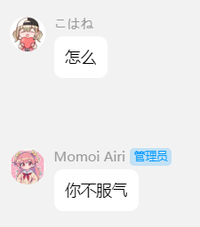

用途展示：



机器人包含以下插件：
----- 音游类综合查询 -----
- PJSK综合查询 By NagiHina_haruki
----- 战舰世界综合查询 -----
- yuyuko：窝窝屎水表查询 By 西行寺雨季，本心
- kokomi：窝窝屎水表查询 By Maoyu，田麻小溪
----- 棋类游戏 -----
- 五子棋，黑白棋，围棋
- 中国象棋
----- 娱乐功能 -----
- 签到+收藏小游戏 By 田麻小溪
- airi心愿瓶：漂流瓶plus By 田麻小溪
- 测测你的今日运势
- 塔罗牌占卜 By MinatoAquaCrews
- 随即抓取群友做老婆 By glamorgan9826
- 今天吃什么 By Cvandia
- 点歌插件 By MeetWq
- 表情包制作 By MeetWq
- PJSK贴纸制作 By lgc-NB2Dev
- 烤倍率/pt计算器
- emoji合成
----- 基础插件 -----
- B站解析插件
- 显示帮助消息
※ 上述内容为功能介绍，非指令列表，群内发送"帮助"或者"help"获取详细的指令列表
搭建流程：
- 准备一个小号，一台24h运行的设备或者云服务器。
- 搭建napcat（自行百度）。
- 反向WebSocket链接： ws://47.122.44.61:31955/onebot/v11/ws
- 开用！
搭建须知：
- airi为同人性质bot，公益服务，不会以任何理由收费或者拉赞助，且与游戏《初音未来：缤纷舞台》、朝夕光年、字节跳动等无直接联系。
严禁主动给airi及主人以任何形式的资助、打赏，这些行为将被视为对机器人运营方针的不配合。
严禁冒充airi管理员（airi没有另外请管理员）、拉群中间人等身份，借由主人的名义对外收费、索要赞助，这些行为严重损害airi以及主人的名誉，发现一起追责一起。
严禁将一切有关airi的信息发送至任何由《初音未来：缤纷舞台》、朝夕光年、字节跳动等版权方直接运营的自媒体平台、社交账号、群聊、论坛等。
发现发现违反上述约定的情况，会直接断联拉黑处理，恕不提醒。
- 上述反链不包含haruki，haruki请自行百度搭建。
- airi不对任何qq号可能存在的安全隐患负责。
- airi不带去重功能，请勿在一群挂多个airi。